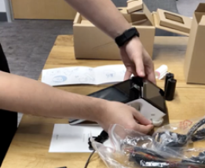
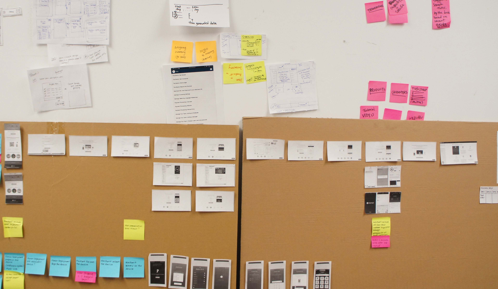
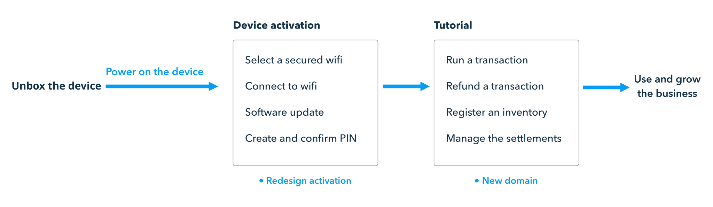
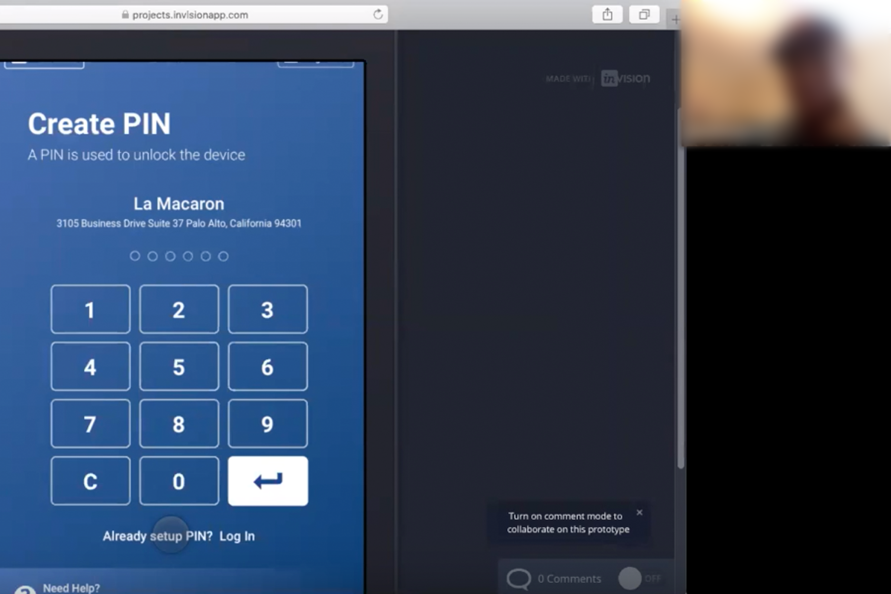
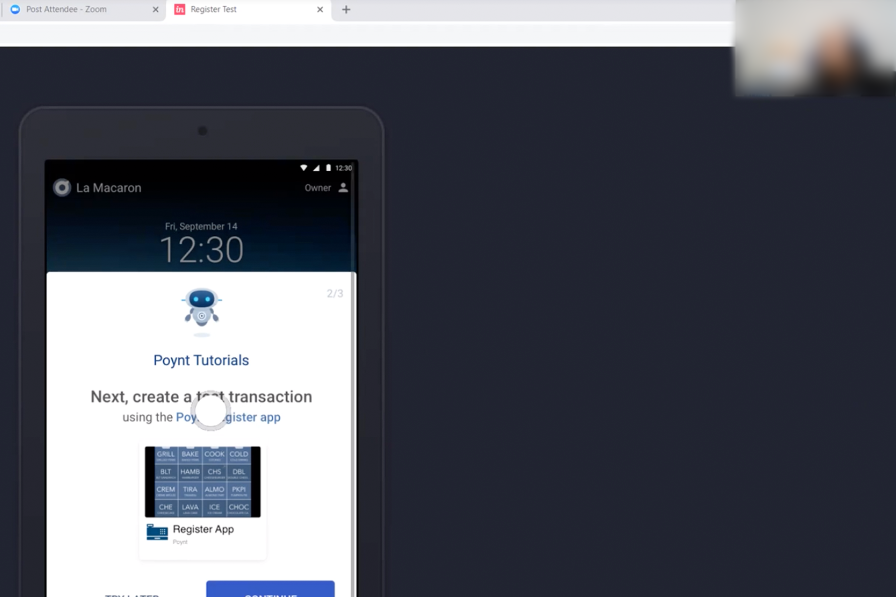
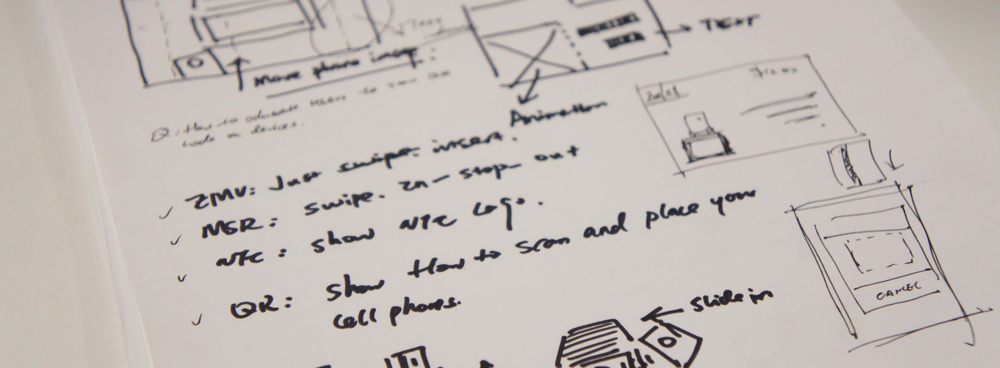

Merchant Onboarding Experience Poynt offers an all-inclusive solution, covering everything from point of sale to customer management through Poynt payment terminals. Streamlining the Android-based Poynt OS is crucial in ensuring merchants can quickly grasp and initiate their daily business operations.
Timeline
Dec 2018 ~ Mar 2019
Dec 2018 ~ Mar 2019
My role
Lead Designer: Interaction, Research, Prototype, Motion
Lead Designer: Interaction, Research, Prototype, Motion
Team
Product Manager, Engineers, Customer Success
Product Manager, Engineers, Customer Success
Identify the Problem
High Return Rate: After a thorough review of
the data with the customer success team, it became evident that our device return rate was notably high.
The data revealed that some merchants never activated their devices, while others ceased transactions
after successful activation.
Merchants' Pain Points
The device activation experience was not intuitive.
With a failed onboarding, they have to pay additional $100 to resellers in order to learn how to use
it.

Design Opportunity
• Streamlined the activation flow for quick and easy
device setup.
• Instilled confidence in merchants by ensuring they are proficient in operating the device before their first customer interaction.
• Minimized unnecessary costs for customers.


• Instilled confidence in merchants by ensuring they are proficient in operating the device before their first customer interaction.
• Minimized unnecessary costs for customers.
What are the issues with the onboarding
flow?
We invited both customers and internal team members
to test our existing products. As they navigated through the interfaces, we encouraged them to vocalize
any points of confusion. We meticulously recorded each step of the process. Later, we reviewed all the
recordings, documenting the specific points where users encountered difficulties and the reasons behind
their hesitations.

Discover and Brainstorm
The findings and insights are valuable, yet to gain
a comprehensive understanding, we must also assess the broader impact and challenges. This involves
mapping out the existing onboarding flow and identifying key pain points. Through this process, we
highlighted specific areas in need of closer attention. For instance, users experienced difficulties in
identifying secure Wi-Fi networks, faced extended firmware update processes with unclear customer
support options, and grappled with confusion on the login page, often mistakenly assuming it required
their email address.


Merchant Journey
I started to map out the end-to-end workflow from
the moment when the user receives the box and unbox to set up the device. And there are four phases:
Prepare to set up the hardware,
active the device, onboard with tutorials and keep using to grow their business. We also defined the
actions and contents for each phase.

Activation Flow - Before
• Merchants cannot make transactions on insecured
network but we provided both secured and insecured wifi;
• Merchants thought that they were frozen in wifi and update because we didn't show visual indicators very well;
• Merchants confused if passcode is the same as their web login because they see a full size keyboard;


• Merchants thought that they were frozen in wifi and update because we didn't show visual indicators very well;
• Merchants confused if passcode is the same as their web login because they see a full size keyboard;
Activation Flow - After
• Improved the secured network with a small lock on
the wifi icon;
• Converted loading circle to wifi and software update motions for strong visual signifiers;
• Redesigned keyboard and layout for better understanding that PIN is not the same as their registered email address.


• Converted loading circle to wifi and software update motions for strong visual signifiers;
• Redesigned keyboard and layout for better understanding that PIN is not the same as their registered email address.
Motion Design
'Why don't we also improve visual design by
motion design' I also took the initative to create the motion design to match with Poynt branding
language. In addtion to providing a relaxing moment during the device activation, motion design can
deliver the messages and behaviors much better than the plain texts.


Poynt Tutorial
• It is a game-like experience for merchants to learn by
practice;
• It is also a self service tutorial series to avoid the 'education fee' for the
resellers.
Iterate with Merchants
• I worked with the product manager and customer
success team to provide the Invision prototypes and tested with selected merchants and partners;
• Recorded videos to see users' reactions. It helps us analyze design and make rationale decisions;
• Recorded videos to see users' reactions. It helps us analyze design and make rationale decisions;



Metrics and Next Steps
• Return rate dropped in two weeks;
• Adoption is 100% for
the existing and new merchants.
• Less complaints and less tickets.
• New help app includes
all tutorials for new
hires.
Learnings
• Past experience can inspire for new design.
• Encourage yourself to propose the right experience to the stakeholders even it will be pushed back.
• Design with data and customers' voices.
• Encourage yourself to propose the right experience to the stakeholders even it will be pushed back.
• Design with data and customers' voices.
Customer Checkout Experience After resolve merchants' issues. Let's take a look at our customers. Customers are not familiar with what is the correct way to checkout. There are two screens on Poynt payment terminal. And the card reader is relatively hidden. That is the root cause to stop customers proceed to pay.
Pain Points from Merchants and Customers
The bad checkout experience hurts the merchant's
business and the customers don't know how to use the device to pay.

Design Goal
• Optimize the customer checkout experience and make
it more efficiently.
• Increase merchants' revenue by decreasing the wait line.
• Increase merchants' revenue by decreasing the wait line.
Timeline
Sep 2018 ~ Nov 2019
Sep 2018 ~ Nov 2019
My role
Lead Designer: Interaction, Research, Prototype, Motion
Lead Designer: Interaction, Research, Prototype, Motion
Team
Product Manager, Engineers, Customer Success
Product Manager, Engineers, Customer Success
Competitor Research
I conducted a research with competitors in the
industry with merchants interviews. I tried to conclude a good solution in the current market. However, it
is really hard to find good
examples by talking to the merchants. They had to put stickers, added notes to notify the customers on how
to perform a transaction on differen payment terminals.


Ideation
The focal point is that checkout flow is usually very
short, static images are not very useful and intuitive for customers. If the screen is small, then the
messages we can deliver to
the customers are even more restricted. Under that circumstance, how about motion? Why cannot we use
motion to educate the customers on how to complete a transaction with Poynt payment termianl?

Old Customer View (static image)

New Customer View

Usability Testing
• I reached out regular people on the street and also
some merchants. I worked with an engineer to use the real demo to test the design and get feedback from
them;
• Based on the feedback, I iterated and polished design to make it more clear for users;
• Based on the feedback, I iterated and polished design to make it more clear for users;

Measure Success
• 100% adoption with zero customer success ticket.
•
NFC transactions keep growing within one-year.
Scale Design
• Apply the same design approach with new payment
methods and providers;
• Follow up with merchants and customers to optimize any potential issues.
• Follow up with merchants and customers to optimize any potential issues.